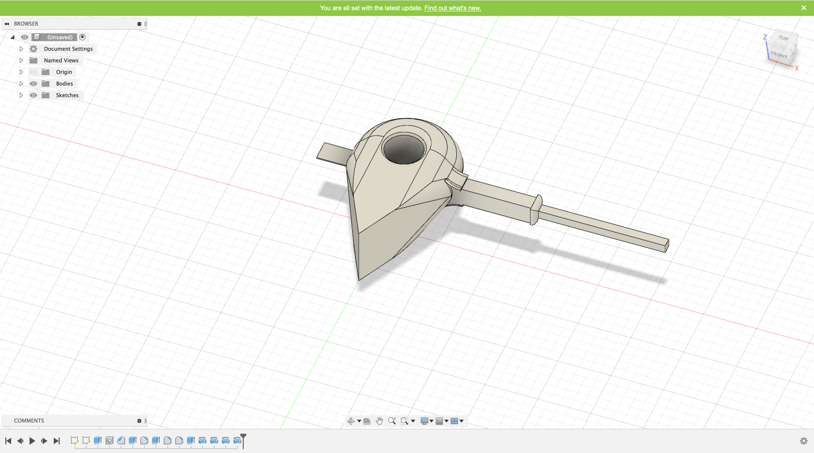
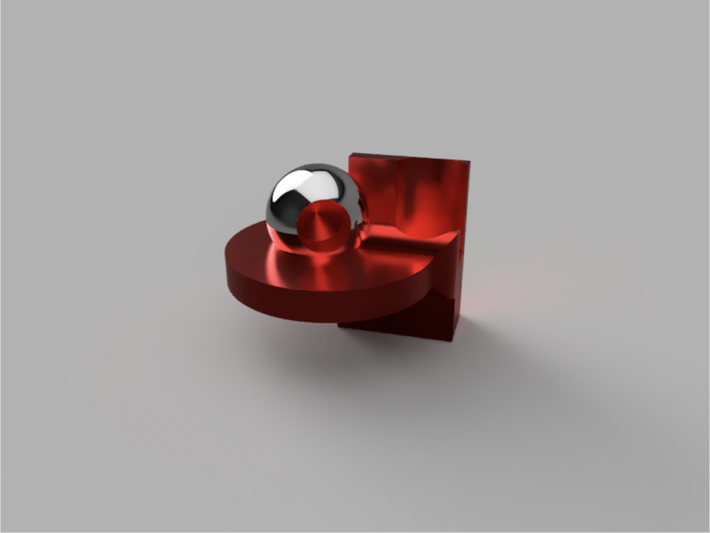
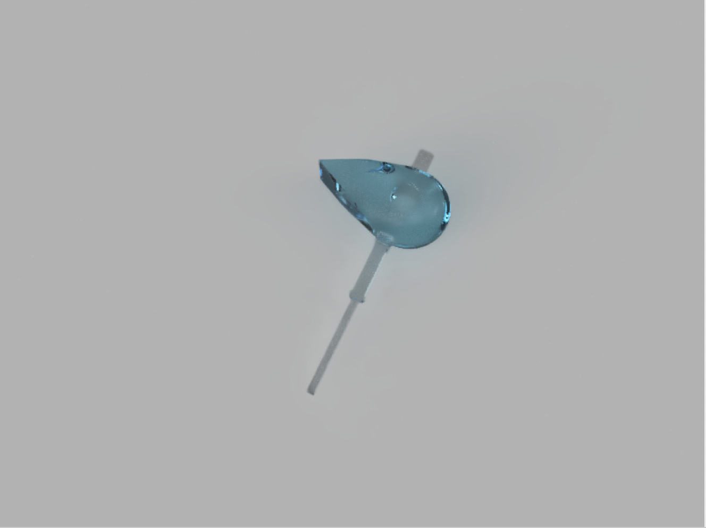
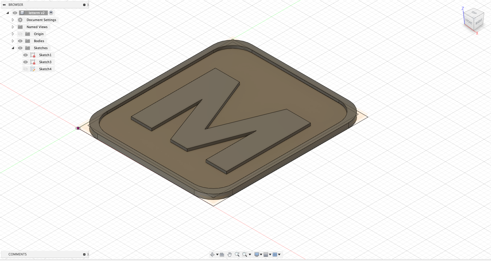
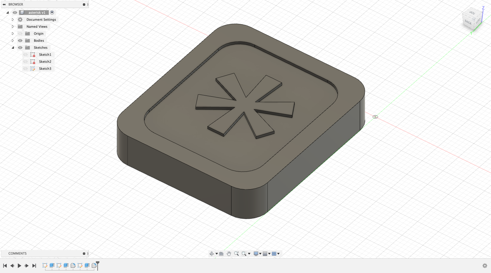

Phase 01 - Tutorial and Process Exercises
Here, we played around with Fusion360 and created two different objects.



Object 1 (left) is a random object created.
Object 2 (right) uses the rule of evens to create symmetry.
Phase 02 - CAD/CAM, Modeling objects, and toolpath simulations
During this phase, we created our own sample stamps.



Phase 03 - Dry Run Selfie with CNC Machine

Phase 04 - Fiefdom Brainstorming and Rough Draft
Click here to see a larger version.